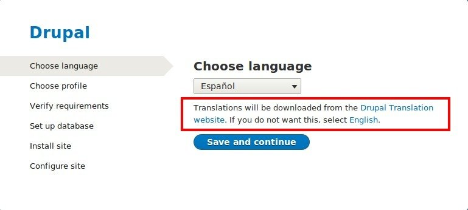
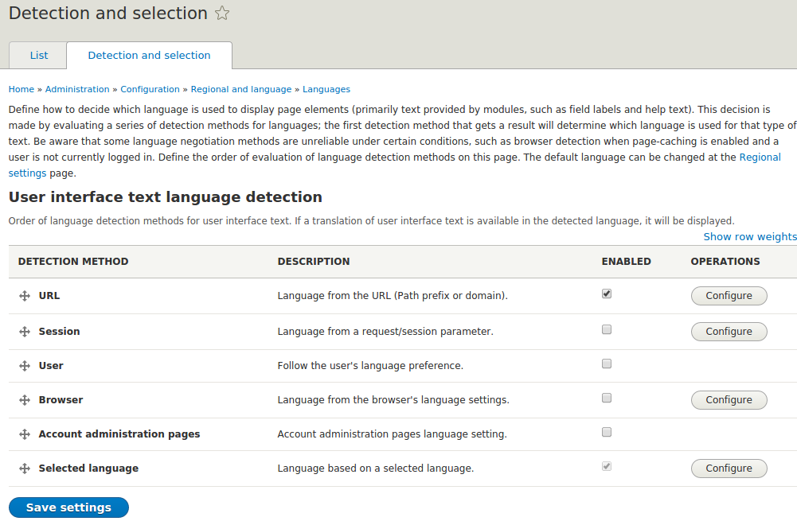

Drupal8
Multilingual Awesomeness & What's New
Presented by Chakrapani R / @chakri_iiith
Chakrapani R
- Graduated from IIIT-Hyderabad
- From Bangalore
- Drupal architect at Azri Solutions
- Drupal since 2009
- Author of Zoho D7 module
- Core contributor
- Led a team which contribed 50+ commits to core
- Drupal Bangalore
Overview
- Language first installer
- Core multilingual modules
- Optional and translatable English
- Language detection options
- Language visibility and filtering
- Transliteration
- Improved translation UI
- Content and Configuration translations
Language first installer
- Browser based language detection
- Automated translation downloader
- Remove english if chosen language is foreign
- Complete rtl support
Language first installer

Translation downloader
Remove english

Complete rtl support
More core modules
- 4 core modules ~ 20+ D7 modules

Simple language setup and optional english
- Simple language overview screen
- Add/Remove languages including english
- No more disabled languages


Higly flexible detection options
Language detection options for content


Limitless language assignment
Extensible special languages
- Not everything can have a language
- Language neutral in D7 was a special language
- In D8, we have two special languages 'Not Applicable' and 'Not specified
- Modules can add languages like these
you can create views in any language
Content entities with bundles are more flexible
- In D7, we have content type settings for language feature
- D8 explands it to all entity types and bundles
- D8 entities include Comments, users, taxonomy terms, nodes, menus and custom blocks
- Central configuration screen for all these entity types
 Click for Demo
Click for Demo
Easier rtl styling
- Language setings include rtl or ltr orientation per language
- Clean support for rtl from picking the install profile
- In D7, for any css file, the rtl counterpart was file-rtl.css
- Now rtl is all integrated in actual css
- you should use attribute selectors like
[dir="rtl"]
Language visibility and filtering
Block visibility- Extended visibility setting for language
- eg: seperate menus for differenct languages displayed through blocks
- Drupal allows you to configure a separate language negotiation method for content

Language visibility and filtering
Views language filteringTransliteration in core
- Drupal now comes with powerfull transliteration system
- Used for machine name generation
Transliteration in core
Deployment friendly automated downloads
- Automated translation downloads
- Automated updates from the community
- Update frequency, source and overrides are configurable
Staging and deployment friendly
- All the retrieved files are stored in once central directory
- Dev environment can enable translation updates
- Live environment to have it disabled
- Import in live can be done from a preconfigured directory
- This dir can be put under version control

Context specific translation APIs
No more get_t() and st()
- In D7, t() can be used only after db was setup
- st() should be used during installation
- Otherwise, use get_t() to get the right callback
- In drupal8, this is handled within t()
- In D7, t() and format_plural could take context
- Which helps the translators to translate ambiguous text
- This is now extented to their JS counterparts
Drupal.t('May', {}, {context: "Long month name"});
- This is not a phptemplate so we can't use t() directly
- This is possible with 't' or 'trans'
- {% trans %} block is also supported
{{ 'Hello Delhi.'|trans }}
{{ 'Hello Delhi.'|t }}
{% set count = 1 %}
{% trans %}
One Commit.
{% plural count %}
{{ count }} Commits.
{% endtrans %}
String customizations tracked
String customizations tracked
Translatable English
Improved translation UI
Content and configuration translations
Content translations
Configuration translations
Pretty Code
function linkify( selector ) {
if( supports3DTransforms ) {
var nodes = document.querySelectorAll( selector );
for( var i = 0, len = nodes.length; i < len; i++ ) {
var node = nodes[i];
if( !node.className ) {
node.className += ' roll';
}
}
}
}